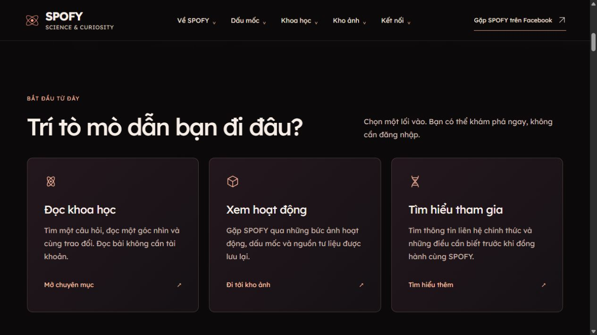
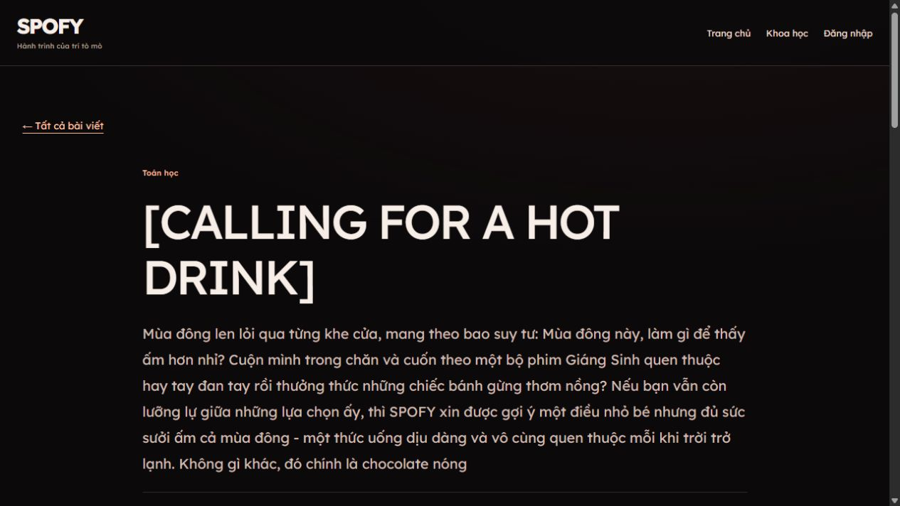
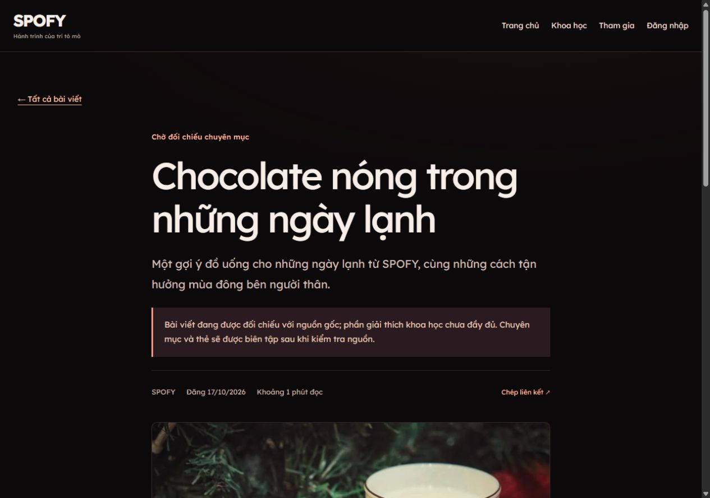

SPOFY · CẬP NHẬT 22/10/2026
Bản xem thử đã chạy trên Netlify.
Giao diện, nội dung, tài khoản và backend được nâng cấp trên một nhánh riêng. Bản sắc SPOFY, chữ 3D và toàn bộ 51 nhóm / 1.471 ảnh được giữ lại.
GitHub và Preview đã được cập nhật. PR #1 đang mở; bản xem thử cần đăng nhập Netlify. Website chính chưa thay đổi. Dữ liệu Preview đã được làm sạch; tài khoản trang chính cố ý không đăng nhập được trên bản thử.
Bạn làm tiếp như sau
- Tạo tài khoản Brevo Free tại trang Brevo chính thức và xác minh email. Tự đặt mật khẩu, không gửi qua chat. Chưa cần mua tên miền.
- Thêm người gửi tên SPOFY với email bạn quản lý và xác minh bằng mã trong hộp thư. Brevo cần cho phép tài khoản gửi transactional; địa chỉ Gmail có thể được thay bằng miền tạm của dịch vụ.
- Làm theo hướng dẫn email để tự nhập API key riêng tư trên Netlify và chỉ gửi về hộp thư kiểm thử. Không đưa key lên GitHub hoặc biến
VITE_*. - Kiểm tra đăng ký, xác minh email và quên mật khẩu trên bản thử. Chưa bấm Merge hay Publish production trước khi chủ website duyệt.
Nếu dùng máy khác: giải nén SPOFY-upgrade-source.zip, clone repository bằng GitHub Desktop, tạo nhánh sửa rồi chép nội dung source vào thư mục clone. Giữ cấu trúc thư mục. Không tải ZIP thay cho source, không kéo riêng dist lên Netlify.
Những phần đã hoàn thiện
Dễ đọc và dễ tham gia
Lexend, tóm tắt ngắn, thời gian đọc, tiêu đề/metadata từng trang; Bắt đầu từ đây, cấu trúc câu hỏi hàng tuần, Tham gia/FAQ và quyền riêng tư. Nội dung chưa xác minh được ghi rõ.
Tài khoản và backend
Hiện/ẩn mật khẩu, lỗi theo trường, token xác minh/khôi phục có hạn và dùng một lần, quản lý phiên, giới hạn tần suất, quyền reader/admin trên máy chủ. Email thật còn cần cấu hình dịch vụ.
Giữ trọn kho tư liệu
Đủ 2.942 tệp thumbnail/full thật, khoảng 230 MiB. Ảnh có srcset theo kích thước thực và được phục vụ cùng website. Giữ nguồn Facebook cùng phân biệt ngày đăng/ngày sự kiện.
Đã kiểm tra
76/76 test backend đạt, gồm kiểm tra Brevo/Resend và cách ly Preview. Typecheck và lint đạt; bản trước đã build/deploy Netlify thành công. Kiểm tra 5 trang tại 5 độ rộng ở local; trên Netlify đã kiểm tra menu, dấu mốc, ảnh, bài viết và mobile 390px. Chưa thử gửi email thật.
Ảnh của bản thử nghiệm

Ảnh chụp local, focus ring hiển thị khi điều hướng bằng bàn phím.
Bài viết trước


Bài viết sau


Còn cần bạn cung cấp hoặc cấu hình
- Email: Brevo key (hoặc Resend), sender đã xác minh và origin website. Không gửi khóa/mật khẩu qua chat. Preview chỉ gửi tới hộp thư test do bạn kiểm soát.
- Dữ liệu Preview: đã tách riêng và làm sạch. Giữ cờ riêng cho nhánh đã kiểm chứng; không reset nhánh hoặc thay dữ liệu production.
- Bài đồ uống: cần bản gốc/nguồn để phục hồi phần giải thích và chốt chuyên mục. Chưa bịa phần thiếu.
- Thiết bị: còn cần test máy thật, zoom 200%, reduced-motion, lỗi GPU và FPS. Bộ kiểm thử hiện tại chưa thay thế các kiểm tra đó.